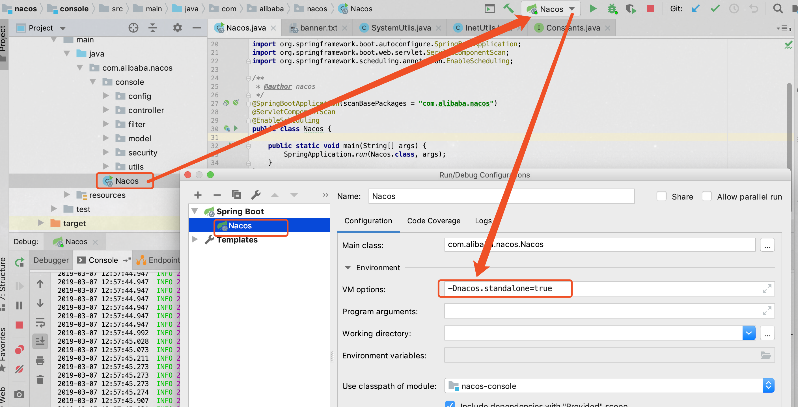
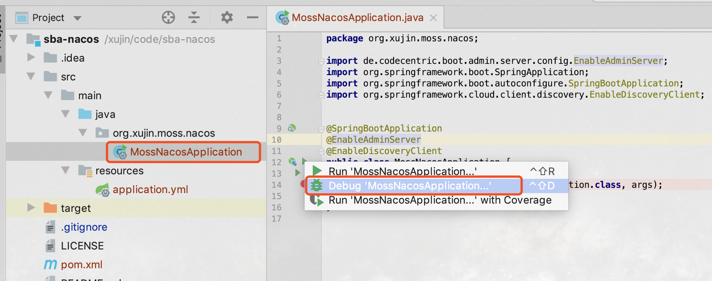
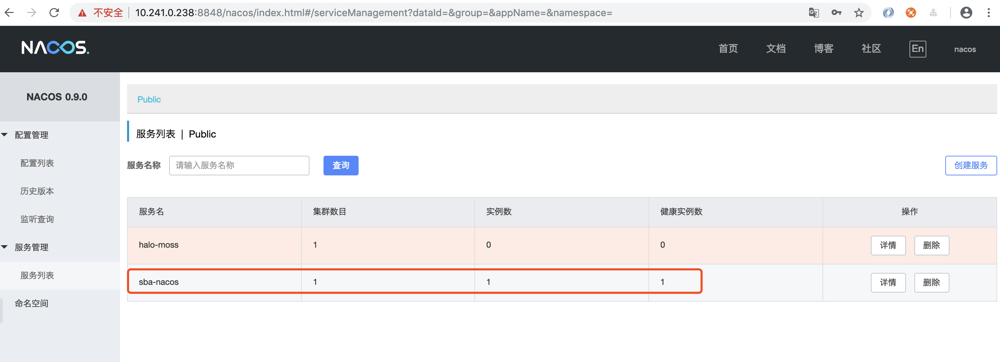
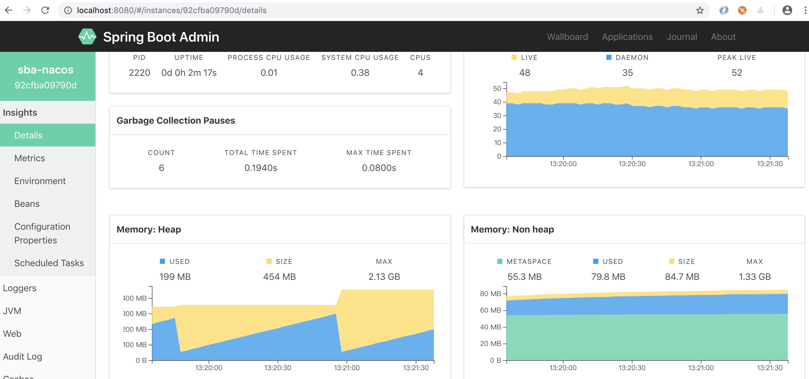

摘要:本文主要讲解如何将Spring Boot Admin与Spring Cloud Alibaba中的spring-cloud-starter-alibaba-nacos-discovery进行整合使用。
1. 整合概述
通过搭建一个Spring Boot Admin Server，并将其通过spring-cloud-starter-alibaba-nacos-discovery注册到Nacos Server中即可。 源码工程地址为:https://github.com/SoftwareKing/sba-nacos
说明本文使用的Spring Boot Admin的版本为2.1.2，Spring Cloud的版本为Greenwich.RELEASE，Spring Cloud Alibaba的版本为0.2.1.RELEASE。至于其它版本，请读者自行适配处理。
2. 创建sba-nacos工程
1.创建sba-nacos工程，添加maven依赖如下所示:
<?xml version="1.0" encoding="UTF-8"?>
<project xmlns="http://maven.apache.org/POM/4.0.0"
xmlns:xsi="http://www.w3.org/2001/XMLSchema-instance"
xsi:schemaLocation="http://maven.apache.org/POM/4.0.0 http://maven.apache.org/xsd/maven-4.0.0.xsd">
<modelVersion>4.0.0</modelVersion>
<parent>
<groupId>org.springframework.boot</groupId>
<artifactId>spring-boot-starter-parent</artifactId>
<version>2.1.2.RELEASE</version>
</parent>
<groupId>org.xujin.moss</groupId>
<artifactId>sba-nacos</artifactId>
<properties>
<spring.boot.admin.version>2.1.2</spring.boot.admin.version>
</properties>
<dependencyManagement>
<dependencies>
<dependency>
<groupId>org.springframework.cloud</groupId>
<artifactId>spring-cloud-dependencies</artifactId>
<version>Greenwich.RELEASE</version>
<type>pom</type>
<scope>import</scope>
</dependency>
<dependency>
<groupId>org.springframework.cloud</groupId>
<artifactId>spring-cloud-alibaba-dependencies</artifactId>
<version>0.2.1.RELEASE</version>
<type>pom</type>
<scope>import</scope>
</dependency>
</dependencies>
</dependencyManagement>
<dependencies>
<dependency>
<groupId>org.springframework.boot</groupId>
<artifactId>spring-boot-starter-actuator</artifactId>
</dependency>
<dependency>
<groupId>org.springframework.cloud</groupId>
<artifactId>spring-cloud-starter-alibaba-nacos-discovery</artifactId>
</dependency>
<dependency>
<groupId>de.codecentric</groupId>
<artifactId>spring-boot-admin-starter-server</artifactId>
<version>${spring.boot.admin.version}</version>
</dependency>
<dependency>
<groupId>org.springframework.boot</groupId>
<artifactId>spring-boot-starter-web</artifactId>
</dependency>
<dependency>
<groupId>org.jolokia</groupId>
<artifactId>jolokia-core</artifactId>
</dependency>
</dependencies>
<build>
<finalName>sba-nacos</finalName>
<plugins>
<plugin>
<groupId>org.springframework.boot</groupId>
<artifactId>spring-boot-maven-plugin</artifactId>
</plugin>
</plugins>
</build>
</project>
- 创建主入口程序，代码如下所示:
package org.xujin.moss.nacos;
import de.codecentric.boot.admin.server.config.EnableAdminServer;
import org.springframework.boot.SpringApplication;
import org.springframework.boot.autoconfigure.SpringBootApplication;
import org.springframework.cloud.client.discovery.EnableDiscoveryClient;
@SpringBootApplication
@EnableAdminServer
@EnableDiscoveryClient
public class MossNacosApplication {
public static void main(String[] args) {
SpringApplication.run(MossNacosApplication.class, args);
}
}
3.application.yml配置如下所示:
spring:
application:
name: sba-nacos
cloud:
nacos:
discovery:
server-addr: 127.0.0.1:8848
server:
port: 8080 #启动端口
info.groupId: @project.groupId@
info.artifactId: @project.artifactId@
info.version: @project.version@
#开启端点
management:
endpoints:
web:
exposure:
include: '*'
security:
enabled: false
endpoint:
health:
show-details: ALWAYS
其中127.0.0.1:8848为Nacos Server的地址。
3.启动测试
3.1 本地源码启动Nacos
至于什么是Nacos，这里不做过多介绍。有兴趣者可以访问http://nacos.io,或者访问: http://nacos.net.
说明: http://nacos.net.目前内容为快照版本。
访问https://github.com/alibaba/nacos ,使用Git克隆Nacos代码，直接导入到IDEA中，如下所示设置启动参数，直接启动。 
从IDE中启动Nacos是我个人喜欢的方式，因为可以随时Debug Nacos任何代码，其它启动方式请参考官网。
3.2 启动sba-nacos
以Debug方式启动，sba-nacos，如下图所示：

启动之后访问nacos控制台，我们可以看到sba-nacos已经注册到Nacos注册中心。如下图所示. 
说明访问Nacos控制台，需要输入用户名和密码默认为用户名为nacos，密码:nacos
访问http://localhost:8080/#/instances/92cfba09790d/details，我们可以看到Spring Boot Admin Server已经成功启动，并且通过EndPoint获取到自己的端点信息，如下图所示:
